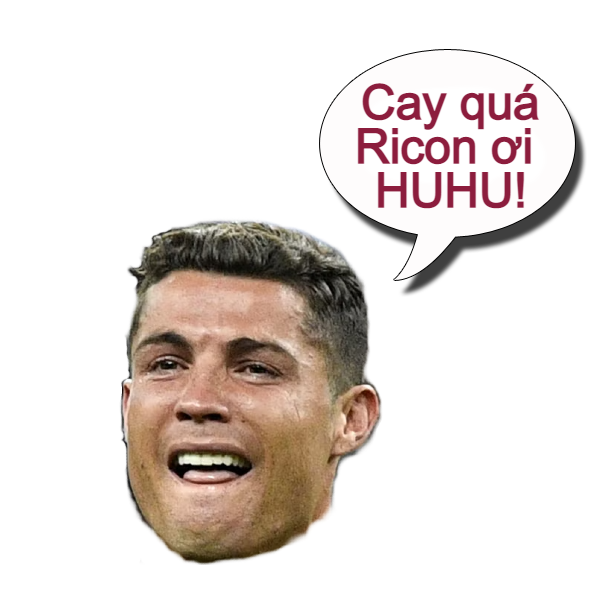
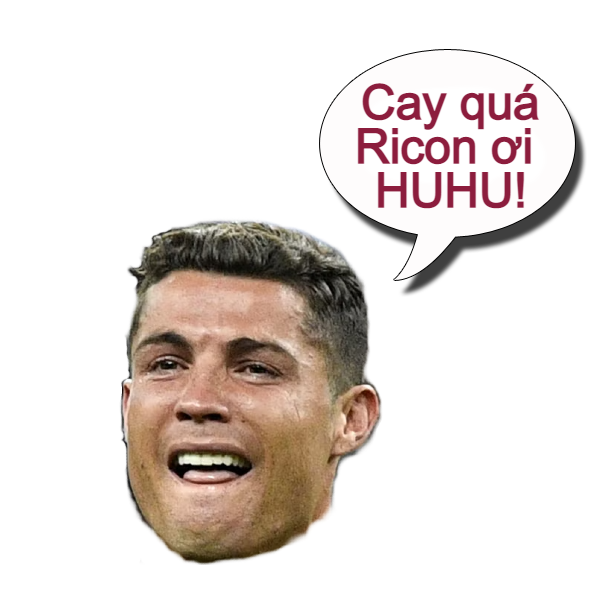
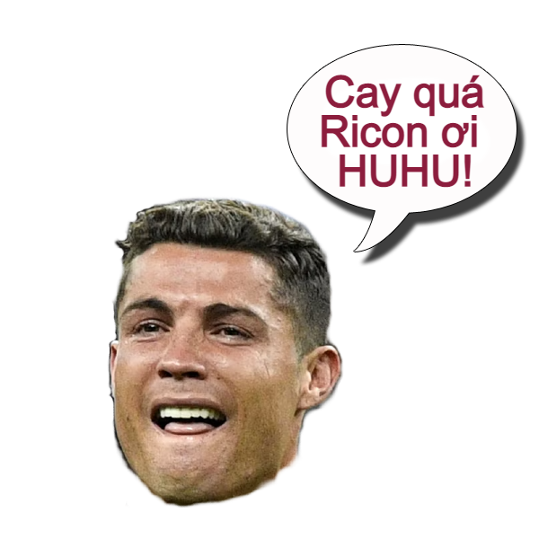
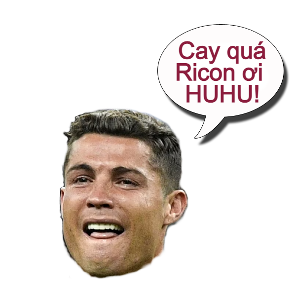

Messi won FIFA World Cup 2022
 




Gửi những ai là Ricon
Đừng làm Ricon nữa, hãy trở thành Culi như chúng tôi, Richa (Ronaldo) không còn cơ hội để so sánh với GOAT Messi nữa rồi! Hãy xem video tận hưởng nha toàn thể Ricon.
Siuuuuuuu!